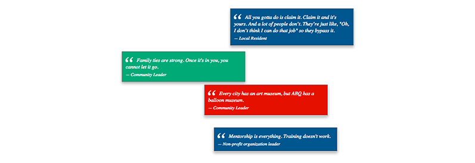
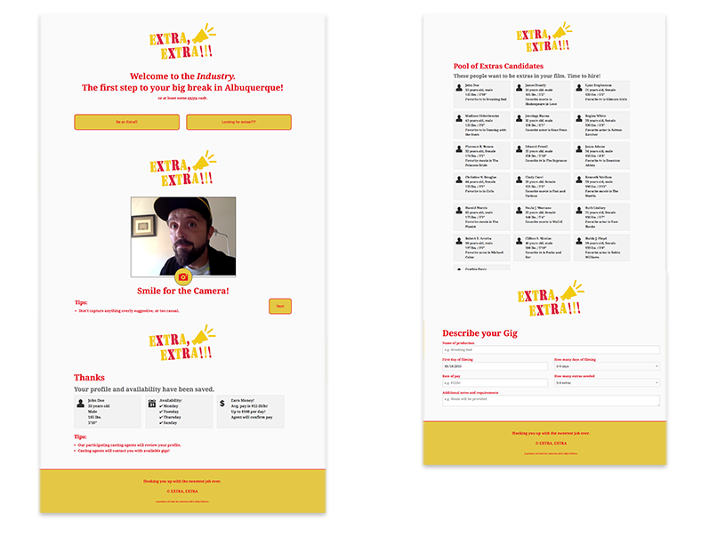
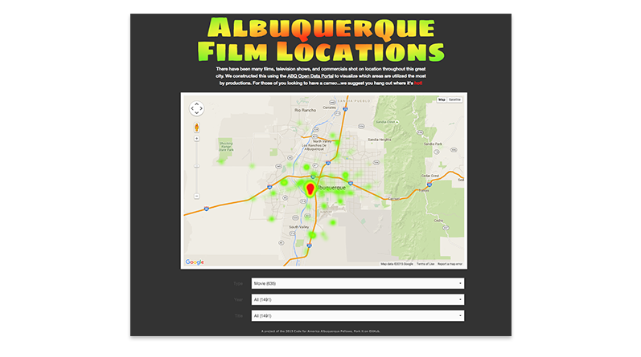
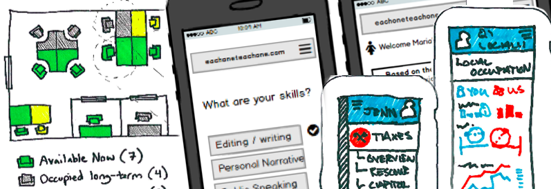
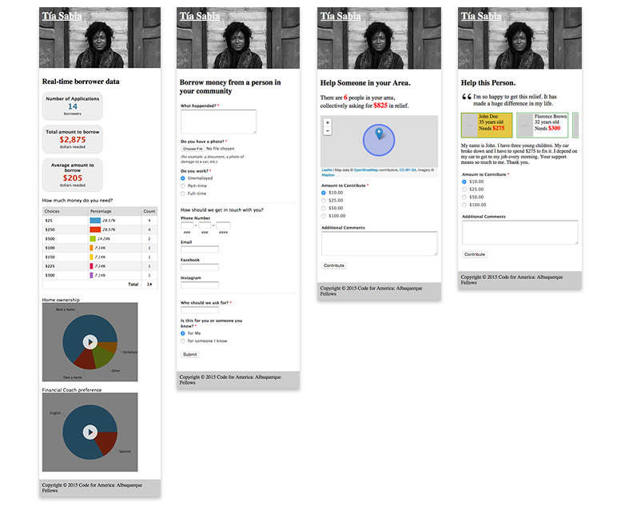
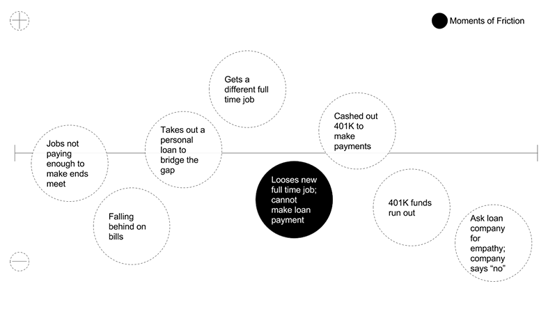
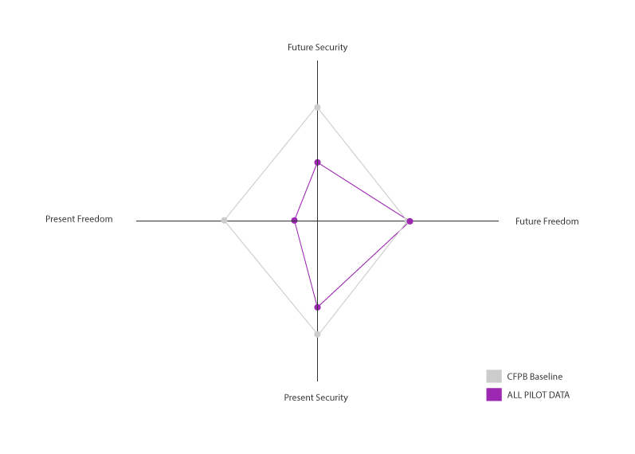
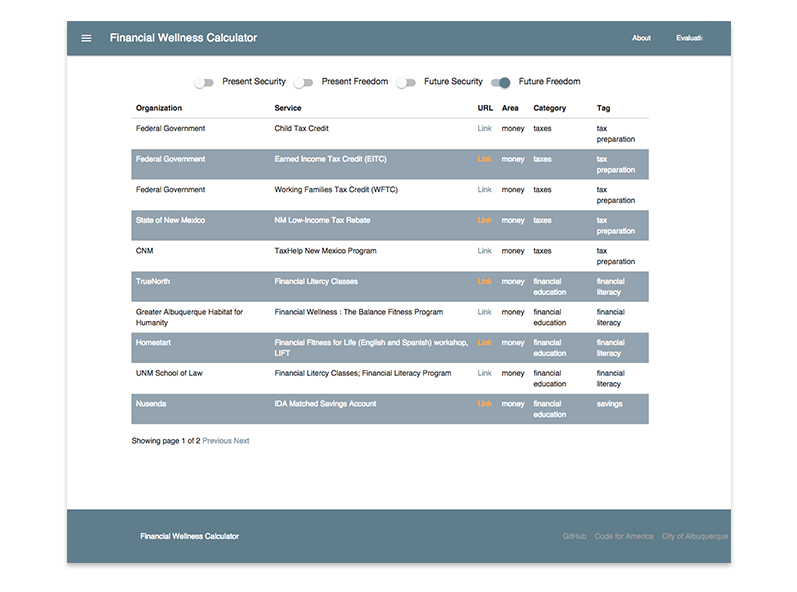
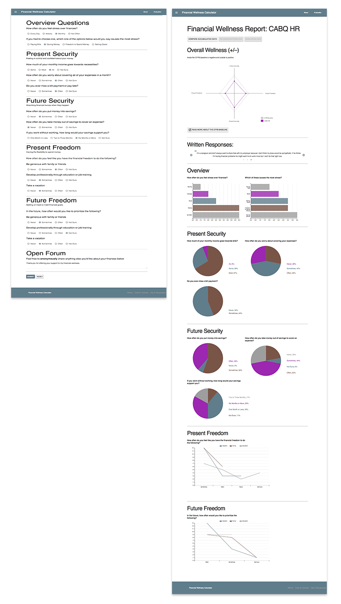

 <!DOCTYPE html>

<html>

<title>Jennings Hanna, Code for America Fellowship</title>

<meta name="viewport" content="width=device-width, initial-scale=1">

 <!-- CSS RESET ERIC MEYER
 <link rel="stylesheet" type="text/css" href="assets/reset.css" />
 -->
<link rel="shortcut icon" href="/favicon.ico" type="image/x-icon">
<link rel="icon" href="/favicon.ico" type="image/x-icon">
 
 <!-- Skeleton CSS -->
 <link rel="stylesheet" href="assets/skeleton/normalize.css">
 <link rel="stylesheet" href="assets/skeleton/skeleton.css">
 
 <!-- MY CSS -->
 <link rel="stylesheet" type="text/css" href="assets/style.css" />
 
 <!-- GOOGLE WEB FONT - 'Open Sans' Normal 400 -->
 <link href='http://fonts.googleapis.com/css?family=Open+Sans' rel='stylesheet' type='text/css'>
 
  <!-- FONT AWESOME -->
 <link rel="stylesheet" href="https://maxcdn.bootstrapcdn.com/font-awesome/4.4.0/css/font-awesome.min.css">

</html>

<body >
	<div class="container top">
		<div class="row">
			<div class="twelve columns">
		<p class="color"><a href="index.html"></a>Cool! Let me tell you a about my fellowship! In 2015 I spent the year as a <span class="name">Code for America Fellow assisting the Mayor's Office of the City of Albuquerque.</span> As the designer on a small three person team of fellows, over the course of the year we built a product that helps residents get access to financial wellness tools. Don't know what <em>financial wellness</em> is? I didn't either before the fellowship. Keep reading and I'll explain.</p>
				
				<p class="color">Code for America is a bay-area based non-profit that sends groups of fellows to build a digital service platforms to a select few cities each year. My team and I were sent to Albuquerque where we were given the task of "helping those who need it most" by building technological solutions around "economic development and social mobility". As part of the fellowship we spent the entire month of February in residency interviewing leaders in the community and getting to know the beautiful high desert city. We interviewed more than one hundred people and attended nearly as many public events. Including press conferences and news shows to announce our arrival and intentions to build a digital product for the residents.</p>
				<p class="color">Upon our return we spent a few months synthesizing our research and building prototypes. Most of which we centered around helping residents get access to capital through underwriting with data instead of traditional credit checks. We also focused on delivering financial assistance resources in a timely and pointed way. One chilling fact we discovered was that we used to support these areas of intervention was that 70% of New Mexico residents are "working poor", meaning they are receiving benefits from at least one social service to stay afloat. In other words, being poor in Albuquerque is the lifestyle of the majority of residents and most of those can't make their necessities work each and every month. Or if they can, it's only until they hit a bump like a child getting sick or a car repair before they'll be in dire straights. In fact, we found out that 47% of American's cannot cover a $400.00 gap like this on average...</p>
				<p class="color">The team and I then traveled back to Albuquerque to do more research and test some of our assumptions with early stage prototypes. We held a community meeting with most of the one hundred or so leaders we had met in February. We asked them to help verify that what we were hearing from our design research were insights that accurately reflected what they had shared with us. During that event we presented the insights, some simple design priciples, and our early stage prototypes. Then we held a community workshop where we asked attendees to play some design thinking games to help us zero in on the most useful interventions we could possibly create. We also showed what we called The Quote Wall: a prototype we made with HTML/CSS/Javascript that publicly displays quotes from the interviews. <a href="http://codeforamerica.github.io/abq-quotewall/">It's hosted here on GitHub./</a></p>
				
				<p class="color">Before I get too far along I should mention that we built a lot prototypes in our discovery process and throughout. Some scripted. Some not. Most messy and quickly forgotten. Some simply to test our own assumptions. Here is a list with many of them for you to browse:</p>
				<ul>
					<p class="color">Hack Week and Residency Prototypes:</p>
					<li class="color"><a href="http://codeforamerica.github.io/abq-filmextras/" target="_blank">Extra Extra! Get extra work in the film business.</a></li>
					
					<li class="color"><a href="http://codeforamerica.github.io/abq-filmextras/" target="_blank">Film Locations Map [open city data]</a></li>
					
					<br />
					
					<p class="color">Maps:</p>
					<li class="color"><a href="http://bit.ly/1Spd7Vf" target="_blank">Map of Financial Institutions by Type in Albuquerque [open city data</a></li>
					<iframe width="100%" height="400" frameborder="0" src="https://cfa.cartodb.com/viz/60d204dc-dfd5-11e4-b175-0e853d047bba/embed_map"></iframe>
					<br /><br /><br />
					<li class="color"><a href="http://bit.ly/1ye0jLX" target="_blank">Density Map of People Receiving Public Services [census data, United Way data] (testing assumption that most residents in need lived in two specific areas)</a></li>
					<iframe width="100%" height="400" frameborder="0" src="https://cfa.cartodb.com/viz/8380ce8c-d40e-11e4-8340-0e9d821ea90d/embed_map"></iframe>
					<br /><br /><br />
					<li class="color"><a href="http://bit.ly/1KLhhWC" target="_blank">Map of Non-Profit Types by Area Code [United Way data] (testing assumption of to many non-profits operating independently)</a></li>
					<iframe width="100%" height="400" frameborder="0" src="https://cfa.cartodb.com/viz/343be550-0979-11e5-bfe2-0e018d66dc29/embed_map"></iframe>
					
					<br /><br /><br />
					<p class="color">Sketched Prototypes:</p>
					
					<br />
					<li class="color"><a href="http://codeforamerica.github.io/abq-seatmap/" target="_blank">Seat Map: A Prototype for a Renting a Chair in a Co-Working Space.</a></li>
					<li class="color"><a href="#" target="_blank">My 1099: A Prototype to Report Freelance Financial Data to the City/County for a Tax Break.</a></li>
					<li class="color"><a href="#" target="_blank">Each One, Teach One: A Prototype for a Social Mentoring Service to Help While Looking for Work.</a></li>
					<br />
					<p class="color">Staged Prototypes: (tested with users / feedback requested from stakeholders)</p>
					<li class="color"><a href="http://codeforamerica.github.io/abq-tiasabia/" target="_blank">Tia Sabia (translates to: Your Wise Aunt): A Peer-to-Peer Lending Service for Albuquerque Residents.</a></li>
					
					<li class="color"><a href="http://codeforamerica.github.io/abq-financial-services-directory/" target="_blank">Albuquerque Financial Services Directory: A Dataset on All Types of Financial Services Offered in the Area.</a></li>
					<li class="color"><a href="#" target="_blank">Albuquerque Financial Wellness Wizard (v1): A Tool that Evaluates the User's Services by Need / Time and Offers them Resources from the Directory Mentioned Above.</a></li>
				</ul>
				<p class="color">Halfway through the year we were asked to present the city with <a href="http://codeforamerica.github.io/abq-midyear/" target="_blank">this mid-year report</a> and a presentation. Our focus up to this point had been helping residents with access to short-term loans that were not predatory. We had discovered that New Mexico had a disproportionate amount of predatory lenders compared to other states. It also lacked many of the newer regulations other states had passed to curb the dispersement of these types of loans. One of which limited these types of lending to interest rates in the the 36&ndash;40% range and that type of regulation had effectively ended predatory lending practices in those states. As of many things in New Mexico, the state legislature was a little behind. Though they had tried to pass the law twice in the last few years, each time it was easily defeated in the house. Also, New Mexico is unique in that the legislature only meets for one month on even years and two months on odd ones. As you might imagine, getting things passed in the state house is a total rat race.</p>
				<p class="color">Eventually though, our research lead us to spend some time with the researchers who created a report on these lenders for the Pew Trust in Washington D.C.. They informed us that this was a complex problem that required policy interventions, although they encouraged us to continue to pressure the mayor to talk about it. My team and I were excited to intervene and we rose to the occasion by focusing our mid-year report and presentation on a specific woman we had met while conducting user research on payday lending named Yvonne. We found Yvonne on craigslist and when she sat down with us in the library downtown to talk, here's what she shared:</p>
				
				<p class="color">Yvonne had been through a lot. And sadly, she shared a lot of things in common with many other residents of Albuquerque. She's had been divorced. She had lost her job recently. She had been wanting to start a new chapter and in such she had enrolled in culinary school at a local community college. She had a payday loan and two title loans. One of which was on her son's truck. This one she regretted so much when she brought it up she uncontrollably burst into tears. If you'd asked Yvonne a few months before we met her she would have told you she was on the up and up. But "life happened". That's what she told us. <em>"Life happened."</em></p>
				<p class="color">Here is the video of my teammate and I presenting at Code for America's BETA telling Yvonnes' story, how it related to our research findings, and why we made the Tia Sabia prototype in response:</p>
				<iframe width="100%" height="400" src="https://www.youtube.com/embed/YReiHCJvOEo" frameborder="0"></iframe>
				<br /><br />
				<p class="color">It came as a surprise to us when the city and the CfA responded poorly to our focus on payday lending and other predatory lending practices. As a team we had thought the city was going to support on this talking point. Unfortunately, our presentation had stirred the pot a little too much. We had caused enough noise that people were asking question like <em>"is the CfA working on a solution to payday lending?"</em> to the mayors office and CfA leadership. In the end the decision was made to un-list our presentation video and we pivoted our product to focus on supporting financial wellness.</p>
				<p class="color"><strong>Financial Wellness</strong> is a metric of the Consumer Finance Protection Bureau. It's essentially what behavioral economics has taught us about how people understand and manage personal finances. It's defined by a matrix that looks like this:</p>
				
				<p class="color">The purple line on the chart represents where the data compares to the CFPB matrix as a baseline. Anything inside the line is below the baseline and outside is above the baseline. The goal of a financial wellness is to get people as close to the baseline as possible. The result is happy residents that have the freedom and security to handle their finances in the present and future. You can read all about the research behind and creation of the matrix in their public report <a href="http://www.consumerfinance.gov/reports/financial-well-being/" target="_blank">here</a>.</p>
				<p class="color">In response to our learning about financial wellness we realized that we should work proactively instead of trying to bandage an existing wound like payday lending. The refocus taught us a lot about working with stakeholders especially in a political arena. Whereas failing in the tech industry is something that's seen as a part of building products and encouraged to a certain extent. Failing in the political arena on an issue that polarizes people can be political suicide especially for a politician.</p>
				<p class="color">In our refocus we started by talking to those we knew had been working on financial literature and coaching. Our colleagues at WESST and the Albuquerque Community Foundation helped us find many organization offering these services and create a database of resources. The data we collected was okay. Over sixty entries offering everything from cash aid to car insurance assistance. There were a few over arching issues with this dataset though. First, many of the services were offered on a one off bases and the organizations couldn't offer them in bulk or had no plan to ramp them up. Secondly, some of the services were unclear as to how to get them and how timely they might be. Lastly, the many of the resources were focused on those who are in dire need (like homeless shelter and food banks). Those services are undeniably helpful and needed but our work was focused on people like Yvonne, people who were close to that disparity but hadn't yet fallen in the hole. We didn't want residents to think we were suggesting that they need more help from social services. We wanted to help residents lift themselves up in a resilient way that was also empathetic to them being "working poor" and not homeless. Here is a screen capture of the resources list as it has ended up in our final program:</p>
				
				<p class="color">After returning to Albuquerque with the resources database prototype we quickly caught onto users feedback that they wanted to see something along these lines to be offered by their employer or organization to their workers. Many business and non-profit owners were interested in our product to help their employees. And in our research we had found that when someone needs a loan or some kind of financial assistance they tend to go to their family first and their boss second. Feeling that this was a great insight with built in community ownership we ran with this as scope and it defined our final product.</p>
				<p class="color">The final product we build is called the Albuquerque Financial Wellness Calculator. The tool helps organizations understand and offer pointed and timely financial resources and recommendations to their workers through a simple yet comprehensive online survey. In addition the tool also creates a accumulative database for analysis for anyone interested that is owned by the city. I should mention Albuquerque has been one of the leaders in cities opening datasets to the public and the financial wellness calculator dataset is no exception.</p>
				<p class="color">Here is a screen captures of the evaluation and the generated report from the final product:</p>
				
				<p class="color">The end of the journey of a Code for America fellowship is at the Summit. An appropriately named conference that the organization host every year in October. At the summit leaders in tech mingle with leaders in government, in hopes that more inspiring digital government services are then inspired and created. It's also where the cites and fellows showcase our work by presenting on stage and demoing our software. Here's a video of my teammate and city partner speaking at the summit:</p>
				<iframe width="100%" height="400" src="https://www.youtube.com/embed/ix1OBAJrA8A?rel=0" frameborder="0"></iframe>
				<p class="color">When I looked at the fellowship and left my job at the NFL to take the offer I wanted to accomplish one thing personally. I wanted to help people. Clear and simple. And I feel as though we did help some people. We could have helped many more but things move slow when a mayor and a city are involved and in the end I feel we had many successes:</p>
				<ul>
					<li class="color">By creating a evaluation tool that will continue be used and modified with the community, not for them.</li>
					<li class="color">Through working with local residents to help create a local chapter of Code for America in the city which has already done some incredible work by building a voting location application and helping a mental health clinic digitize their on-boarding process.</li>
					<li class="color">In interviewing and holding design thinking workshops with city staff we hopefully inspired them to work differently and take an initiative approach in digitizing social services they already offer</li>
					<li class="color">Most importantly we connected a lot of leaders and organizations who did not have previous relationships. This will have the largest long term impact in my opinion as relationships grow organically.</li>
				</ul>
				<p class="color">Don't get me wrong. We failed a lot here too. There were a lot of goals that we set early on that were not accomplished and a lot of milestones that were not met. Though through working iteratively and being process agnostic we built with and not for the residents of Albuquerque&mdash; a place that will now always hold a special peice of my professional career and a social product of our making.</p>
			</div>
		</div>
		<div class="row">
			<hr />
			<p class="color">More case studies:</p>
		</div>
		<div class="row portfolio-cards">
			<div class="four columns">
				<div class="card cornell">
					<p class="color"><a href="cornell.html">Meyer Cancer Center NYC</a></p>
				</div>
			</div>
			<div class="four columns">
				<div class="card deja">
					<p class="color"><a href="deja.html">Send yourself postcards in the future</a></p>
				</div>
			</div>
			<div class="four columns">
				<div class="card super-bowl">
					<p class="color"><a href="super-bowl.html">Super Bowl Bracket</a></p>
				</div>
			</div>
		</div>
	</div>
	
<script src="http://ajax.googleapis.com/ajax/libs/jquery/1.11.1/jquery.min.js"></script>
<script src="assets/js/jquery.animate-colors-min.js"></script>
<script src="assets/js/spectrum.js"></script>
<script src="assets/js/analytics.js"></script>

</body>